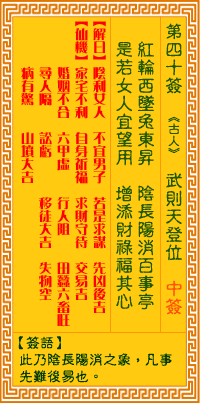

观音灵签第四十签 【武则天登位】 |
 | |||
红轮西坠兔东升 阴长阳消是两形 若是女人占此卦 增添福禄称心情 |
||||
| 【吉凶】 | 中平签 | 【宫位】 | 酉宫 | |
| 【签语】 | 此卦阴长阳消之象，凡事先难后易也。 | |||
| 【解曰】 | 阴利女人 不宜男子 若是求谋 先凶后吉 | |||
| 【仙机】 | 此签家宅不利，自身祈福，求财守待，交易吉，婚姻不合，田蚕六畜旺，六甲虚，行人阻，寻人隔，讼亏，移徙大吉，失物空，病有惊， 山坟大吉。 | |||
| 【详解】 | 太阳西下月亮就东升，阴生阳失是两者间的状态显现;如果女人求占得到此一卦象，即称心如意福禄增添。 阴利女人，不宜男子，若问求望，无忧后喜。此签阴长阳消之象，凡事先难后吉。 本签是阴长阳消之家。凡事先难后吉者。不管是交易。求财。时运。均在开始时。均为不利。但是因一己之奋斗。苦心造诣。终有出头之日。所幸田亩大收。六畜兴旺。皆是祈福所赐。疾病。皆有险。宜小心。易言之。阴利女人。不宜男子。若问求望。无忧从喜。 此签有”知礼尽孝”之意。意味当事人，不论男女，都应知礼法、尽孝道。孔子说：”非礼勿视、非礼勿言、非礼勿听、非礼勿动。”人必须约束自己的行为举止，凡事都不应越矩。现今电视节目、电影、网络、书籍等，会污染身心产生妄想邪念的，不应看。不道人之短，不说己之长，不过问别人的隐私。别人在说八卦、私事，不关自己的事，避得远远的，不听。不做违反道德良心的事。凡事真诚、尊重、为他人着想，即是知礼。尽孝道是做人的根本，莫忘父母生养之恩，凡事勿让父母操心，时刻挂念、问候关心，而不只是在金钱上的供养。守礼尽孝是道德的根本，不会因为时代变迁而有所改变。 | |||
| 【典故】 | 武则天是中国历史上唯一的女皇帝。唐高宗（太宗之子）即位不久，她就做了皇后。高宗病死，她以太后身份临时执政，公元六九○年， 她六十七岁时，正式登位做女皇帝，改国号为‘周’。她只做了十五年皇帝，八十二岁高龄，被迫退位，由李氏复兴唐朝。 | |||